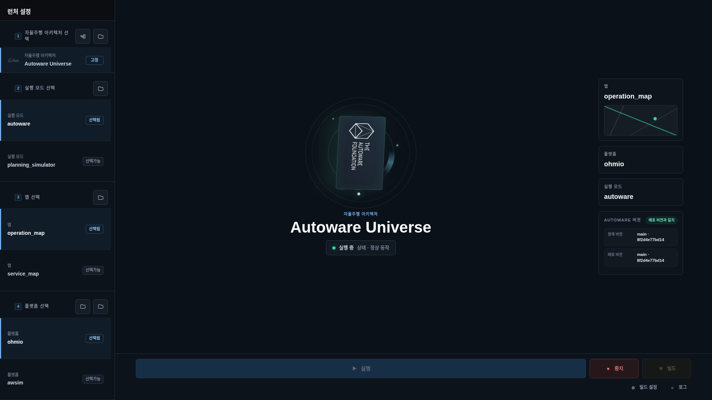
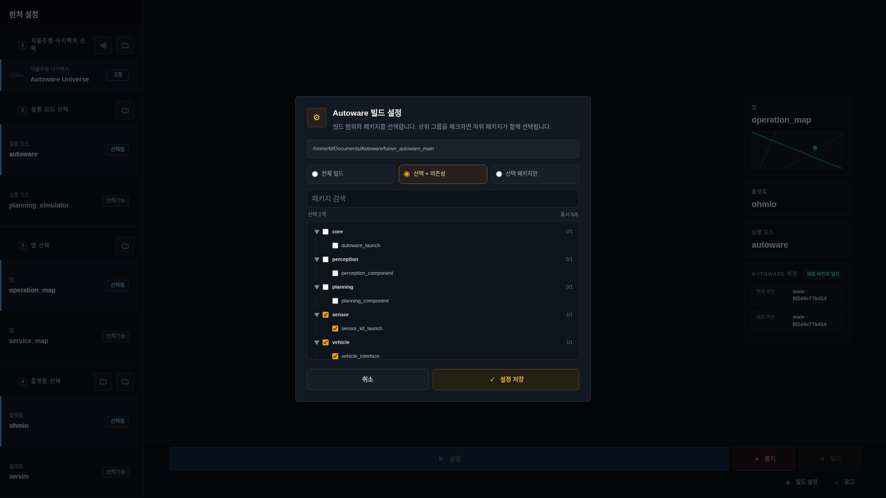
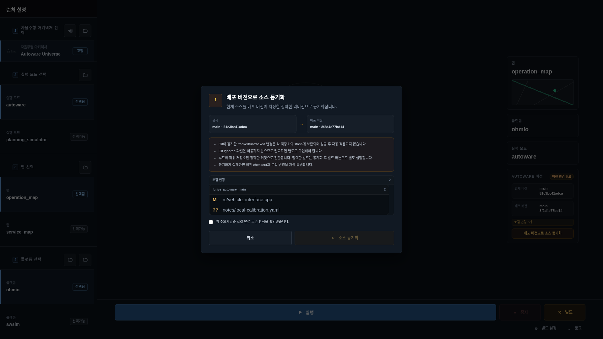

🚘 Launcher 사용 가이드¶
지도와 실행 구성을 선택하고 Autoware를 시작·중지하는 화면입니다. 화면 준비부터 실행 상태 확인, 빌드 설정과 소스 동기화까지 필요한 작업을 안내합니다. 실제 실행 상태와 설정은 Launcher가 관리하며, 화면과 CLI는 같은 기능을 사용합니다.
대상 Autoware 운용·개발자
시작 위치 Launcher 화면 또는 CLI
완료 기준 실행 상태와 선택한 구성 확인
1. 시작과 진입¶
차량 설치 묶음의 ./bootstrap.sh를 한 번 완료하면 main 로그인 뒤 Furive OS가 자동으로 열립니다. 하단
Launcher 앱을 선택하면 현재 Autoware 상태를 조회합니다. 설치 뒤에는 역할을 다시 입력하지 않습니다.
source checkout에서 처음 개발 실행하는 경우에만 다음 명령을 사용합니다.
화면이 열리지 않거나 상태가 갱신되지 않을 때는 다음 순서로 확인합니다.
정상 운용 중에는 Launcher 화면을 열기 위해 service를 다시 시작하지 않습니다. furive dashboard는 자동으로
열린 Dashboard를 닫았을 때 다시 여는 예외 명령입니다.
⌨️ CLI로 같은 작업하기¶
| 확인·작업 | 명령 |
|---|---|
| Autoware 실행·빌드 상태 | furive autoware status |
| 저장된 실행 설정 확인 | furive autoware config |
| 저장된 설정으로 실행 | furive autoware start |
참고
화면과 CLI는 같은 Launcher 설정을 사용합니다. HMI-ECU에서 입력한 명령은 A-ECU에 전달합니다. 설정 변경·빌드·동기화·중지와 폴더 열기는 Autoware 명령어 표를 봅니다.
2. 먼저 지킬 안전 원칙¶
주의
실행과 중지는 Autoware runtime에 실제 명령을 전달합니다. 차량 주변, 수동 개입 수단과 정차 상태를
확인하지 않은 채 화면 확인 목적으로 누르지 않습니다.
- 맵·플랫폼·실행 모드를 바꾸기 전에 Autoware와 차량 제어가 끝났는지 확인합니다.
실행요청 성공과 자율주행 준비 완료는 다릅니다. runtime, RViz, localization과 차량 상태를 다시 봅니다.중지는 Autoware lifecycle 명령이며 비상정지 수단이 아닙니다. 실제 비상 상황은 차량 안전 절차를 따릅니다.빌드와소스 동기화는 개발 작업공간을 변경할 수 있습니다. 운용자는 실행하지 않습니다.- 전환 중 버튼이 비활성화되면 반복 입력하지 않습니다. 상태가
대기 중또는실행 중으로 수렴할 때까지 기다린 뒤 로그를 확인합니다.
3. 전체 화면 읽기¶

Launcher는 왼쪽 선택 영역과 오른쪽 runtime 영역으로 나뉩니다.
자율주행 아키텍처: 현재는 Autoware Universe로 고정되며 표시값입니다.실행 모드: 실제 주행용autoware와 계획 검증용 모드처럼 설치된 launcher 조합을 선택합니다.맵: 지도 폴더에서 발견한 후보와 현재 선택을 표시합니다.플랫폼: 차량·sensor kit launcher 조합을 선택합니다.- 중앙 runtime: 대기·시작 중·실행 중·중지 중과 Autoware 상태를 표시합니다.
- 오른쪽 요약: 선택 맵·플랫폼·실행 모드와 현재/배포 Autoware revision을 비교합니다.
- 하단 명령: 실행, 중지, 빌드, 빌드 설정과 로그를 제공합니다.
폴더와 VS Code 아이콘은 개발자가 해당 workspace 또는 플랫폼 구현을 확인할 때 사용합니다. 폴더가 열린다고 빌드나 runtime이 자동으로 바뀌지는 않습니다.
4. 정상 실행 순서¶
- 현재 runtime이
대기 중 · 실행 가능인지 확인합니다. - 실행 목적에 맞는 실행 모드를 고릅니다.
- 현장과 일치하는 맵을 고릅니다.
- 설치 차량과 일치하는 플랫폼을 고릅니다.
- 오른쪽 요약의 세 값이 왼쪽 선택과 같은지 대조합니다.
- Autoware 버전이
배포 버전과 일치인지 확인합니다. - 차량이 정차했고 주변이 안전한 상태에서
실행을 한 번 누릅니다. 시작 중을 거쳐실행 중 · 정상 동작으로 바뀌는지 확인합니다.- RViz, localization, ROS 상태와 차량 제어 준비를 별도로 확인합니다.

실행 중에는 실행 버튼이 비활성화되고 중지 버튼이 활성화됩니다. 화면의 녹색 상태는 Launcher가 관측한
runtime 상태이며 센서, 차량 제어와 경로 안전까지 보증하지 않습니다.
5. 중지와 상태 전환¶
정상 중지는 차량 운행을 먼저 끝내고 다음 순서로 수행합니다.
- 차량 속도 0, 안전 정차와 제어 해제를 확인합니다.
- DLS가 기록 중이면 필요한 세션을 정상 종료합니다.
- Launcher에서
중지를 한 번 누릅니다. - Autoware와 Launcher가 사용한 실행 컨테이너가 함께 멈추고
대기 중으로 돌아오는지 확인합니다. - 남은 Autoware·RViz process가 없고 관련 package 상태가 안정됐는지 확인합니다.
중지는 source, 지도, 빌드 결과를 삭제하지 않습니다. 이전 버전에서 만든 Compose 컨테이너도 멈추지만, Furive 소유를 확인할 수 없는 컨테이너 자체와 개발 작업공간은 삭제하지 않습니다.
시작 또는 중지가 오래 지속되면 버튼을 다시 누르지 말고 로그를 엽니다. 전환 직전 선택, process 종료 코드,
container 상태와 첫 오류를 시간 순서로 확인합니다.
6. 빌드와 빌드 설정¶
빌드는 source workspace가 설치된 main 개발 환경에서만 사용합니다. runtime 실행 중에는 빌드하지 않습니다.

| 범위 | 동작 | 사용하는 경우 |
|---|---|---|
| 전체 빌드 | workspace 전체를 빌드 | 의존성과 공통 interface가 넓게 바뀜 |
| 선택 + 의존성 | 선택 package와 필요한 의존성을 함께 빌드 | 일반적인 package 변경 확인 |
| 선택 package만 | 선택한 package만 빌드 | 의존성이 이미 유효한 좁은 재빌드 |
검색창은 package 이름과 경로를 좁히고, 그룹 체크박스는 하위 package를 함께 선택합니다. 설정 저장은 다음
빌드 버튼의 기본 범위를 저장할 뿐 즉시 빌드하지 않습니다.
빌드 전에는 다음을 확인합니다.
- Autoware runtime과 source sync가 실행 중이지 않다.
- 현재 workspace 경로가 의도한 개발 작업공간이다.
- 선택 package와 의존성 범위가 변경 내용과 맞다.
- 빌드 실패 시 첫 오류와 최종 summary를 Launcher 로그에서 확보한다.
빌드가 성공해도 실차 적용판이 자동 발행되지는 않습니다. 변경 범위의 작은 시험과 furive check, 한 차량
test 검증을 거쳐 같은 변경만 normal로 승격합니다.
7. Autoware revision과 소스 동기화¶
오른쪽 Autoware 버전 카드는 workspace의 현재 revision과 설치 release가 지정한 target revision을 비교합니다.
배포 버전과 일치: root와 확인한 하위 저장소가 target과 일치합니다.로컬 변경: tracked 또는 untracked 변경이 있습니다.배포 버전과 다름: 현재 commit 또는 하위 저장소 revision이 target과 다릅니다.자동 소스 동기화 안 함: 차량 설정상 Autoware 자동 업데이트를 유지하지 않는 상태입니다.

배포 버전으로 소스 동기화는 개발자를 위한 복구·정렬 작업입니다. 확인창에서 현재와 target commit, 저장소별
변경 파일과 다음 경계를 확인합니다.
- Git이 감지한 tracked/untracked 변경은 저장소별 stash에 보존될 수 있지만 성공 뒤 자동 재적용되지 않습니다.
- ignored 파일은 이동하지 않으므로 별도 보존이 필요한지 직접 확인합니다.
- 동기화는 exact revision을 맞추며 빌드는 별도로 실행합니다.
- 실패 시 이전 checkout과 로컬 변경 복원을 시도하지만, 중요한 작업은 먼저 commit 또는 별도 백업합니다.
운용 차량에서 revision 불일치를 임의로 동기화하지 않습니다. 설치 release와 차량 할당이 잘못된 경우 OTA와 차량 배정의 단일 소유자에서 원인을 해결합니다.
8. 로그와 문제 해결¶
| 증상 | 먼저 확인 | 다음 조치 | 하지 않을 것 |
|---|---|---|---|
| 실행 버튼 비활성 | 맵·모드·플랫폼 세 항목 | 설치된 후보와 현재 선택 대조 | config 파일 직접 중복 수정 |
| 시작 중 지속 | runtime·launcher process·RViz | Launcher 로그의 첫 오류 확인 | 실행 버튼 반복 입력 |
| 실행 직후 대기로 복귀 | process exit code, container | 환경·장치·launch 오류 해결 | 알 수 없는 process 강제 종료 |
| 중지 중 지속 | child process와 container 상태 | 안전 상태에서 service 로그 확인 | 비상정지 대신 중지 재시도 |
| 빌드 버튼 비활성 | runtime·source sync·workspace | 실행 작업을 정상 종료 | 실행 중 강제 빌드 |
| 빌드 실패 | 첫 compiler 오류와 선택 범위 | 좁은 수정 뒤 동일 범위 재시험 | 성공한 뒤 오류 줄만 삭제 |
| revision 불일치 | current/target/변경 파일 | commit·백업 뒤 승인된 동기화 | 운용 변경을 무조건 stash |
공통 service 재시작은 진행 중 운행·기록·빌드를 모두 끝낸 정비 상태에서만 수행합니다.
9. Furive OS 연계 구조¶

Launcher는 core/launcher_control.py와 Launcher package가 Autoware lifecycle을 단독 소유합니다. Package
Manager는 Launcher process의 상위 package 상태를 감독하지만 맵 선택이나 Autoware start/stop 정책을 복제하지
않습니다. OTA Updater는 release가 지정한 Autoware revision을 전달하고, System Manager는 자원·ROS Domain을
표시합니다.
main과 edge의 상태·명령은 UTF-8 JSON object stream over TCP :15001에서 TLS 1.3 mutual TLS로 전달됩니다.
ROS data plane은 ROS Domain Bridge와 Zenoh over QUIC/UDP :7447, TLS 1.3 mTLS를 사용합니다. Launcher의
실행 성공과 두 전송 경로의 정상은 각각 따로 확인해야 합니다.
10. 운용 체크리스트¶
실행 전:
- 차량과 주변이 안전하게 정지했다.
- 실행 모드·맵·플랫폼이 현장과 일치한다.
- current와 배포 Autoware revision이 의도한 상태다.
- DLS, ROS Domain과 필수 package 상태를 확인했다.
실행 후:
- Launcher가
실행 중으로 수렴했다. - RViz와 localization이 현재 실행에서 새 데이터를 보낸다.
- 차량 상태와 제어 준비를 별도로 확인했다.
개발 작업 후:
- 빌드 범위와 로그를 기록했다.
furive check를 통과했다.- 한 차량
test에서 실행과 이전 정상 버전 복구를 확인했다.